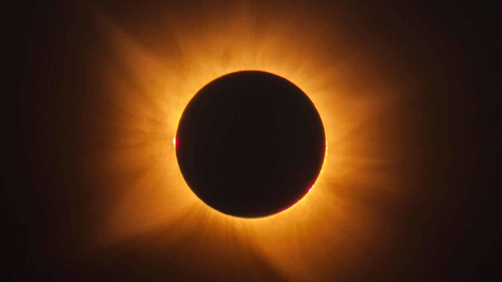

Les plus belles photos de l’éclipse, date de la prochaine éclipse et le boss de la NASA qui flingue 20 ans de dérive – le récap’ sciences

🛒 En lien avec cet article
🛒 Voir le prix : Belles Photos
🛒 Voir le prix : Photos Eclipse
Publicité — Liens de partenariat Amazon : une commission peut être reversée, sans surcoût pour vous.
🔥 Top produits tech du moment
🛒 Voir le prix : Samsung Galaxy S25
🛒 Voir le prix : iPhone 16 Pro
Publicité — Liens de partenariat Amazon : une commission peut être reversée, sans surcoût pour vous.
L'actualité tech ne cesse d'évoluer. Nouveaux produits, acquisitions, découvertes : chaque jour apporte son lot d'informations importantes pour comprendre le monde numérique de demain.
Ce qu'il faut retenir
Bien que la semaine scientifique sur Numerama a été écrasée par l'actualité autour de l'éclipse solaire du 12 août 2026.
Mais en y regardant de plus près, il n'y avait pas que ça.
Pourquoi c'est important
Cette information pourrait avoir des répercussions sur tout le secteur technologique. Elle concerne directement les utilisateurs de technologies numériques et mérite d'être suivie de près dans les prochaines semaines. Les plus belles photos de l’éclipse, date de la prochaine éclipse et le boss de la NASA qui flingue 20 ans de dérive – le récap’ sciences est ainsi un signal à prendre en compte pour comprendre les évolutions du secteur.
En résumé
Retenez l'essentiel : Les plus belles photos de l’éclipse, date de la prochaine éclipse et le boss de la NASA qui flingue 20 ans de dérive – le récap’ sciences. Cette actualité a été rapportée par Numerama. Nous continuerons de suivre ce sujet et de vous tenir informés des prochaines évolutions.
🚀 Vous êtes freelance tech ?
Calculez votre TJM en 30 secondes : micro-entreprise, SASU, EURL ou portage salarial. Gratuit, taux 2025.
Calculer mon TJM →Source : Numerama